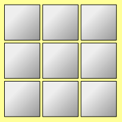

RETO Nº 1 – Encendido de baterías
La primera etapa que debemos iniciar es el ENCENDIDO DE BATERÍAS. Se trata de un sistema de baterías de litio que suministran la energía eléctrica necesaria a la nave para su funcionamiento. Si no se encienden las baterías la nave no tiene energía
Para conseguir el encendido de las baterías hay que introducir en el ordenador un código numérico en forma de cuadro 3x3.

Para descubrir el código debes escribir los 9 primeros números naturales impares ( sin repetir ) en los 9 cuadritos, de manera que se cumpla que la suma de cualquiera de las filas sea 27, que la suma de cualquiera de las columnas sea 27 y que la suma de cualquiera de las dos diagonales sea 27, es decir, que sumes como sumes, el resultado sea siempre 27.